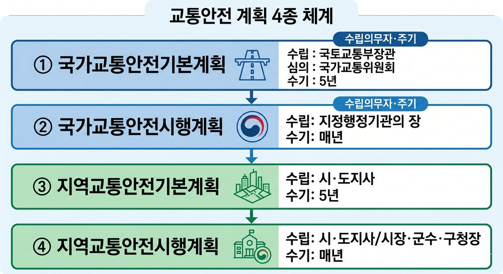
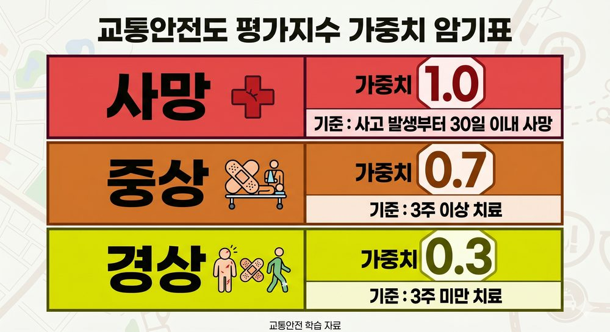

PART 1. 총칙 — 용어 정의▲
개념 01기본 용어 8개
| 용어 | 정의 | 시험 포인트 |
|---|---|---|
| 교통수단 | 사람 이동·화물 운송에 이용되는 운송수단 (육상·수상·항공) | 교통안전표지 = 교통시설 (교통수단 아님) |
| 교통시설 | 도로·철도·궤도·항만·어항·수로·공항·비행장 + 교통안전표지·관제시설·항행안전시설 | 표지·관제시설도 포함 |
| 교통체계 | 교통수단 및 교통시설의 이용·관리·운영체계 또는 관련 산업·제도 등 | 빈칸 자주 출제 |
| 교통사업자 | ①교통수단운영자 ②교통시설설치·관리자 ③제조사업자·교육·연구·조사기관 | 교통운전자는 비해당 ❌ |
| 지정행정기관 | 정부조직법에 의한 중앙행정기관 (기재부·교육부·국토부 등) | 국회(입법부) 비해당 ❌ |
| 교통행정기관 | 지정행정기관의 장 + 시·도지사 + 시장·군수·구청장 | 특별행정기관 비해당 ❌ |
| 교통사고 | 교통수단의 운행·항행·운항과 관련된 사람의 사상 또는 물건의 손괴 | |
| 교통안전관리자 | 교통수단의 안전한 운행·운항 관련 기술적 사항을 점검·관리하는 자 |
⚠️ 함정 주의: 교통안전표지 → 교통수단 아님, 교통시설에 해당
개념 02교통수단안전점검 vs 교통시설안전진단
| 구분 | 주체 | 대상 |
|---|---|---|
| 교통수단안전점검 | 교통행정기관 | 소관 교통수단에 대해 위험요인 조사·점검·평가 |
| 교통시설안전진단 | 교통안전진단기관 | 교통시설에 대해 위험요인 조사·측정·평가 |
⚠️ 함정 주의: 두 용어의 주체·대상을 바꿔치기하여 출제 — 점검=행정기관, 진단=진단기관
PART 2. 관련자 의무▲
개념 03주체별 의무 매핑
| 주체 | 의무 |
|---|---|
| 국가 | 교통안전 종합시책 수립·시행 / 국민 생명·신체·재산 보호 / 재정·금융 조치 강구하여야 한다 |
| 지방자치단체 | 관할구역 내 시책 수립·시행 / 주민 생명·신체·재산 보호 |
| 차량운전자 등 | 안전운행·운항 의무 (차량운전자·선박승무원·항공승무원) |
| 보행자 | 법령 준수 + 육상교통에 위험·피해 주지 않도록 노력 |
⚠️ 함정 주의: 국가=국민 / 지자체=주민 — 서로 바꾸면 오답
⚠️ 함정 주의: 재정·금융 조치: '강구하여야 한다' (강구할 수 있다 ❌ 의무임)
⚠️ 함정 주의: 교통안전 종합시책 = 국가 의무 (차량운전자 의무 ❌)
PART 3. 교통안전 계획 체계▲
개념 04계획 4종 구조

교통안전 계획 4종 체계 흐름도
국가교통안전기본계획(5년, 국토교통부장관) → 심의: 국가교통위원회
→ 국가교통안전시행계획(매년, 지정행정기관의 장)
지역교통안전기본계획(5년, 시·도지사)
→ 지역교통안전시행계획(매년, 시·도지사 / 시장·군수·구청장)
→ 국가교통안전시행계획(매년, 지정행정기관의 장)
지역교통안전기본계획(5년, 시·도지사)
→ 지역교통안전시행계획(매년, 시·도지사 / 시장·군수·구청장)
⚠️ 함정 주의: 시행계획 수립의무자: 지정행정기관의 장 (국토교통부장관 ❌)
개념 05국가교통안전기본계획 핵심
| 항목 | 내용 | 함정 |
|---|---|---|
| 수립의무자 | 국토교통부장관 | 시·도지사 교체 |
| 주기 | 5년 | 1년·10년 교체 |
| 심의기관 | 국가교통위원회 | 교통안전위원회 교체 |
| 경미한 변경 | 부문별 100분의 10 이내 | 100분의 30 교체 |
| 포함사항 O | 포함사항 X |
|---|---|
| 교통안전에 관한 중·장기 종합정책방향 | 단기 종합정책방향 ❌ |
| 교통안전정책의 추진성과 분석·평가 | |
| 연차별 추진계획 | 월별 추진계획 ❌ |
| 지역교통안전시행계획의 추진상 문제점 ❌ |
★ 수립절차: 지침 통보 → 소관별 계획안 제출 → 기본계획안 작성·확정 → 확정계획 통보·공고
개념 06국가교통안전시행계획
| 항목 | 내용 |
|---|---|
| 수립의무자 | 지정행정기관의 장 (소관별 계획안 수립 → 국토교통부장관에 제출) |
| 주기 | 매년 |
⚠️ 함정 주의: '매년 12월 말까지' → 틀림. 시행계획은 단순히 매년 수립
PART 4. 교통안전관리규정▲
개념 07교통안전관리규정 핵심
| 항목 | 내용 | 함정 |
|---|---|---|
| 제출의무자 | 교통시설설치·관리자 및 교통수단운영자 | 교통운전자 ❌ |
| 제출처 | 관할 교통행정기관 | 국토교통부장관 ❌ |
| 변경 후 제출 | 변경한 날부터 1개월 이내 | 3개월 교체 |
| 확인·평가 주기 | 제출일부터 매 5년 전후 100일 이내 | 3년·60일 교체 |
| 확인·평가 주체 | 교통행정기관 | 교통안전공단 ❌ |
⚠️ 함정 주의: 확인평가: 5년/100일 ← 3년/60일 함정 (가장 빈출)
개념 08검토 결과 3종
| 결과 | 의미 |
|---|---|
| 적합 | 교통안전 확보에 문제 없음 |
| 조건부 적합 | 교통안전 확보에 문제 없지만 부분 보완 필요 |
| 부적합 | 교통안전 확보에 문제 있음 |
PART 5. 교통수단안전점검▲
개념 09교통수단안전점검 핵심
| 항목 | 내용 |
|---|---|
| 2개 이상 기관 소관 | 공동으로 점검할 수 있다 (공동점검 가능) |
| 사전통지 기간 | 검사일 7일 전까지 |
| 점검 대상 | 중상자 2명 이상 사고 |
⚠️ 함정 주의: 경상자 10명 이상 단독 → 비해당 (중상자 기준이 핵심)
PART 6. 교통시설안전진단·진단기관▲
개념 10진단기관 등록·취소
| 항목 | 내용 | 함정 |
|---|---|---|
| 등록처 | 시·도지사 | 국토교통부장관 ❌ |
| 등록취소 후 재등록 제한 | 2년 | 3년 교체 |
| 비용 부담 | 진단을 받는 자 | 진단기관 ❌ |
| 의무대상자 | 교통시설설치·관리자 | 교통수단운영자 ❌ |
⚠️ 함정 주의: 임의적 취소사유: 등록기준에의 미달 (필요적 취소 아님)
★ 취소·정지 처분 후에도 착수한 진단업무는 계속 수행 가능
개념 11결격사유 함정
| 케이스 | 결격 여부 |
|---|---|
| 등록취소 후 2년 미경과자 | 결격 O |
| 등록취소 후 2년 경과한 자 | 결격 아님 (등록 가능) |
⚠️ 함정 주의: 2년 지나면 다시 등록 가능 — 2년이 경과하면 결격 아님
PART 7. 운행기록장치▲
개념 12운행기록 핵심 수치
| 항목 | 내용 | 함정 |
|---|---|---|
| 보관기간 | 6개월 | 3개월·1년 교체 |
| 분석기관 | 한국교통안전공단 | 국토교통부장관 ❌ |
| 주기적 제출 | 노선 여객자동차운송사업자 | 일반 사업자 교체 |
| 장착 불필요 | 경형·소형 특수자동차운송사업자 | 대형 ❌ |
| 차로이탈경고 불필요 | 피견인자동차 | 일반차량 교체 |
개념 13운행기록 분석항목 6개
| 분석항목 O (6개) | 분석항목 X |
|---|---|
| 과속 / 급감속 / 급출발 / 회전 / 앞지르기 / 진로변경 | 주차 ❌ (가장 자주 출제) |
⚠️ 함정 주의: 주차는 분석항목 아님 ← 단골 출제
개념 14운행기록 분석결과 활용
| 활용 O | 활용 X (비해당) |
|---|---|
| 자동차의 운행관리 | 과태료 부과 시 일반기준 ❌ |
| 차량운전자 교육·훈련 | 제재·처벌에 사용 불가 |
| 운행계통·운행경로 개선 |
⚠️ 함정 주의: 분석결과 조치: 교통수단운영체계 개선권고 / 연속근무·최소휴게시간 확인 — 교통안전진단 실시 ❌
PART 8. 교통안전관리자 제도▲
개념 15자격 종류 및 시험
| 항목 | 내용 | 함정 |
|---|---|---|
| 자격 종류 5종 | 도로 / 철도 / 항공 / 항만 / 삭도 | 해양 ❌ (존재하지 않음) |
| 시험 실시기관 | 한국교통안전공단 | 국토교통부장관 ❌ |
| 부정행위자 응시제한 | 처분일부터 2년 | 3년 교체 |
| 자격취소 후 응시제한 | 2년 | 3년 교체 |
⚠️ 함정 주의: 해양교통안전관리자 → 없음 (비해당)
개념 16자격취소·정지
| 항목 | 내용 | 함정 |
|---|---|---|
| 처분권자 | 시·도지사 | 국토교통부장관 ❌ |
| 자격정지 최대기간 | 1년 | 2년 교체 |
| 청문 실시기관 | 시·도지사 | 국토교통부장관 ❌ |
⚠️ 함정 주의: 결격사유: 집행유예 선고 후 유예기간 중인 자 = 결격 / 유예기간 경과 후 2년이 되지 않은 자 = 결격 아님
PART 9. 교통안전담당자▲
개념 17지정의무자 + 직무
| 항목 | 내용 |
|---|---|
| 지정의무자 O | 교통시설설치자 / 교통시설관리자 / 교통수단운영자 |
| 지정의무자 X | 교통시설생산자 ❌ |
| 직무 O | 직무 X (비해당) |
|---|---|
| 교통안전점검의 지도·감독 | 교통안전점검의 실시 ❌ (지도·감독만) |
| 교통사고원인 조사·분석 및 기록 유지 | |
| 교통시설 시설·장비의 설치·보완 요청 | 직접 설치·보완 ❌ (요청만) |
⚠️ 함정 주의: 교통시설생산자 → 지정의무자 비해당
⚠️ 함정 주의: 안전점검 직접 실시 ❌ → 지도·감독만
개념 18교육 시간
| 구분 | 시기 | 시간 | 함정 |
|---|---|---|---|
| 신규교육 | 직무 시작 6개월 이내 | 16시간 | 3개월·8시간 교체 |
| 보수교육 | 2년마다 | 8시간 | 1년·16시간 교체 |
⚠️ 함정 주의: 신규: 6개월/16시간 ↔ 보수: 2년/8시간 — 숫자 바꾸기 함정
PART 10. 교통안전도 평가지수▲
개념 19가중치 + 부상 기준

교통안전도 가중치 + 중상·사망 기준
| 구분 | 가중치 | 기준 | 함정 |
|---|---|---|---|
| 사망 | 1.0 | 사고 발생부터 30일 이내 사망 | 10일·20일 교체 |
| 중상 | 0.7 | 3주 이상 치료 | 0.5·1.0 / 2주·4주 교체 |
| 경상 | 0.3 | 3주 미만 치료 | 0.1·0.5 교체 |
개념 20교통안전도 산정식
(교통사고 발생건수 × 0.6) + (교통사고 사상자 수 × 0.4) × 자동차등록(면허) 대수
개념 21중대교통사고
| 항목 | 내용 | 함정 |
|---|---|---|
| 기준 | 8주 이상 치료를 요하는 피해자 발생 | 4주·6주·10주 교체 |
| 체험교육 이수기한 | 통지 받은 날부터 60일 이내 | 30일·90일 교체 |
| 미이수 제재 | 1천만원 이하 과태료 | 500만원 교체 |
| 누적지점 자료 보관 | 3년 | 5년으로 착각 (빈출) |
⚠️ 함정 주의: 중대교통사고 누적지점 자료 보관 = 3년 ← 교통사고 관련 자료(5년)와 혼동 금지
PART 11. 교통문화지수▲
개념 22교통문화지수 핵심
| 항목 | 내용 | 함정 |
|---|---|---|
| 정의 | 국민의 교통안전의식 수준을 객관적으로 측정하기 위한 지수 | |
| 조사항목 3개 | 운전행태 + 교통안전 + 보행행태 | 교통사고 ❌ |
| 특별실태조사 대상 | 하위 100분의 20 이내 | 100분의 10 교체 |
| 조사방법 특례 | 도로교통 외 분야: 다르게 정하여 조사 할 수 있다 | 하여야 한다 ❌ |
⚠️ 함정 주의: 교통사고는 교통문화지수 조사항목 아님
PART 12. 청문·과태료·벌칙▲
개념 23청문
| 항목 | 내용 |
|---|---|
| 실시기관 | 시·도지사 |
| 필수 실시 사유 | 교통안전진단기관의 등록취소 / 교통안전관리자 자격의 취소 |
⚠️ 함정 주의: 청문 실시기관 = 시·도지사 ← 국토교통부장관 교체 함정
개념 24과태료 구조
| 항목 | 내용 | 함정 |
|---|---|---|
| 부과권자 | 국토교통부장관 또는 교통행정기관 | 시·도지사 ❌ |
| 감액·증액 범위 | 1/2 이내 | 1/3 교체 |
| 감액 불가 | 과태료를 체납하고 있는 자 |
| 금액 | 위반 행위 |
|---|---|
| 500만원 이하 과태료 | 교통안전관리규정 미제출·미준수 |
| 1천만원 이하 과태료 | 교통안전진단 미실시·허위 보고서 / 체험교육 미이수 |
| 2년 이하 징역·2천만원 이하 벌금 | 직무상 비밀 누설 (형사처벌, 과태료 아님!) |
⚠️ 함정 주의: 직무상 비밀 누설 = 형사처벌 (과태료 아님 — 최빈출 함정)
개념 25수수료·비밀유지 비해당
| 구분 | 비해당 |
|---|---|
| 과태료 부과대상자 | 교통안전체험 연구·교육시설 설치·운영자 ❌ |
| 수수료 부과대상자 | 교통안전체험 연구·교육시설 설치·운영자 ❌ |
| 비밀유지의무 적용 | 교통안전교육업무 ❌ |
★ 과태료·수수료·비밀유지 — 3가지 모두 체험시설 설치·운영자는 비해당